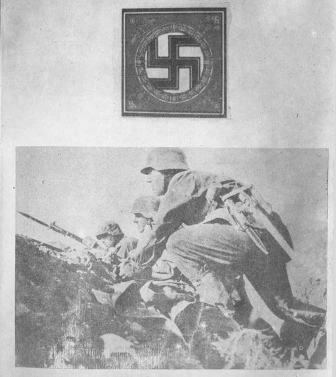
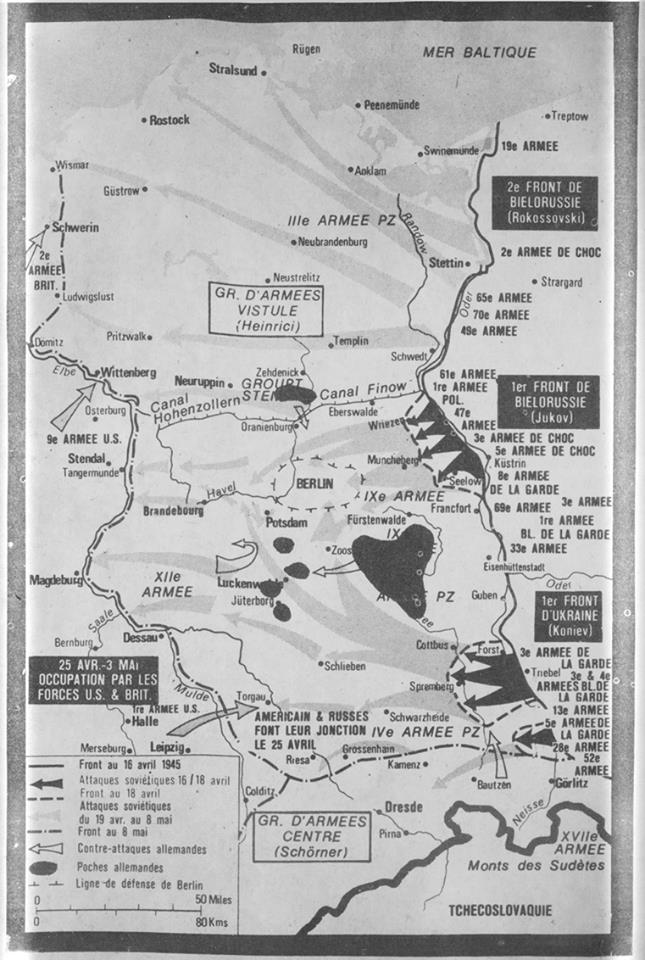
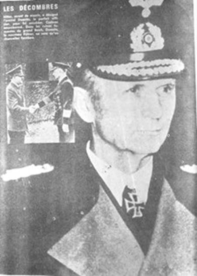
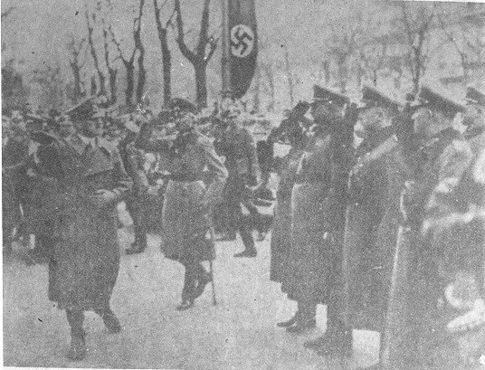
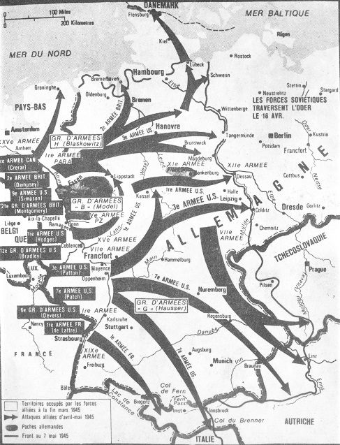
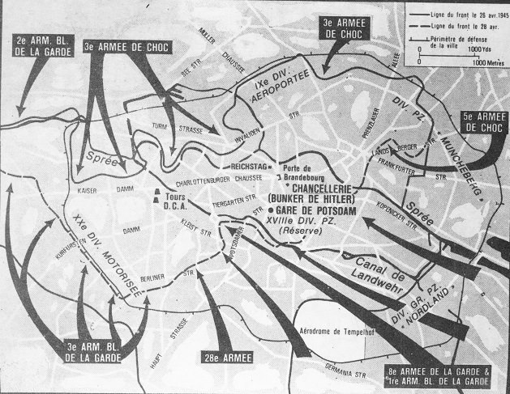
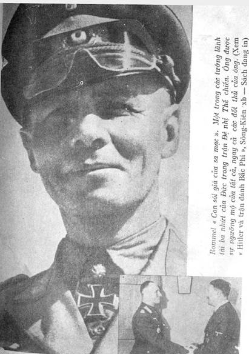

Đường phố vắng ngắt, không một bóng người. Gạch ngói của một ngôi nhà sụp đổ chất đống trước cổng dành cho Đảng. Tôi nghe một tiếng nổ chát chúa của một viên đạn trái phá. Tôi ngừng xe tại một khoảng trống gần cổng ra vào dành cho Quân đội, đã có nhiều xe hơi đậu ở đấy. Bóng dáng người lính canh thường lệ không còn trông thấy nữa. Lối đi lên thềm Dinh Tể Tướng dành cho xe hơi không còn được sử dụng nữa. Đột nhiên tôi rùng mình. Một tiếng rít xẻ rách bầu không im lặng thảm đạm, và lập tức tiếng nổ tiếp theo của một quả đạn cỡ lớn. Viên đạn chắc phải rơi gần Potsdamer Platz. Về hướng đó, vừng sáng của một đám cháy bùng lên mau lẹ chiếu sáng trên các đống đổ nát. Một quả thứ hai nổ vài phút sau đó, nhưng xa hơn một chút. Sau cùng tôi cũng khám phá ra những lính gác đầu tiên. Những binh sĩ đứng gác tại cổng ra vào đã rút lui vào trong bóng che chở của tòa nhà đồ sộ. Một binh sĩ SS đến gần và hỏi tôi đi đâu. Viên hạ sĩ quan trực lập tức đưa tôi đến lối ra vào hầm trú ẩn nằm dưới Dinh Tể Tướng. Chúng tôi đi vào bằng một cánh cửa phụ. Ánh sáng rất yếu. Nhiều binh sĩ võ trang đứng dọc theo bức tường của một hành lang dài mà chúng tôi đang đi. Một vài người hút thuốc, những người khác chuyện trò, những người khác nữa ngồi xổm, đầu hướng về trước, và ngủ. Tiếng động ào ào của quạt máy làm át tiếng nói chuyện. Sau cùng chúng tôi đi đến một nơi được gọi là vị trí chiến đấu của ông Brigadefuhrer Mohnke. Mới đây ông nầy là Lữ đoàn trưởng Lữ đoàn Leibstandarte 1. Và bây giờ là chỉ huy trưởng Biệt động đội Adolf Hitler mới được thành lập mấy hôm trước tại Tiergaten gồm những người tình nguyện ở khắp Đức quốc. Như vậy ông ta tập hợp được chừng 2000 người có nhiệm vụ lập một vòng đai phòng thủ cuối cùng chung quanh Dinh Tể Tướng. Mohnke nói rất lớn tiếng, khoa tay múa chân liên hồi, giữa một số sĩ quan SS. Mặc dầu có quạt máy, không khí dày đặc và hôi hám trong căn phòng hẹp trơ trụi dùng làm văn phòng của ông. Khi đã kiểm soát lại sự vụ lệnh của tôi cạnh Võ phòng, hai quân nhân SS đưa tôi vào bên trong hầm. Từ đây ta chỉ nghe một ít tiếng nổ của các quả đạn pháo kích bên ngoài. Hầm trú ẩn chưa hoàn toàn được xây cất xong, những căn phòng mà chúng tôi đi ngang qua có vẻ trơ trụi và đáng ghét. Người ta ngửi thấy ở đây mùi ẩm mốc đặc biệt của các kiến trúc mới được xây cất. Chứng tôi đi qua một hệ thống chằng chịt nhiều phòng ốc nối với nhau bằng những hành lang hoặc bằng các cửa thép mỏng. Trong tiếng kêu vù vù liên tục của quạt mảy, có tiếng ồn ào nói chuyện chen lẫn vào. Có thể có từ 50 đến 60 căn phòng nhỏ dưới hầm. Hệ thống hầm có sáu lối thoát trong đó có ba lối thoát ra ngoài trời và số còn lại thông với tầng trệt của Dinh Tể Tướng. Nhiều căn phòng này chất đầy cho đến trần nào là bánh mì, đồ hộp và nhiều loại thực phẩm khác đến nỗi khó mà di chuyển ngang qua. Đâu đâu cũng bày ra một quang cảnh giống nhau. Hành lang và phòng nào cũng đầy binh sĩ, phần đông nằm ngủ hay nhàn rỗi ngồi dọc theo các bức tường. Một vài người chụm lại nói chuyện. Một số khác nằm dài xuống sàn và ngủ say, tay nắm chặt võ khí. Hầu hết là những thanh niên cao lớn và khỏe mạnh. Họ không còn cho ta cảm nghĩ là được khích động bởi nhiệt tình chiến đấu đặc biệt nữa, nhưng đúng hơn là một thứ nhẫn nại tiêu cực cam chịu với số phận của mình. Cảm nghĩ nầy sẽ được xác nhận trong những ngày kế tiếp kể cả đối với các sĩ quan cao cấp nhất.

.Ảnh 1: Bộ binh Đức trang bị và võ trang hùng hậu tiếp theo sau các chiến xa và quét sạch vùng đất chiếm được bằng lự đạn và lưỡi lê
Sau rốt, rồi chúng tôi cũng đến được nơi phải đến. Tôi lại bước vào một căn phòng nhỏ có mùi ẩm mốc, chật ních thư ký, họa viên và lính hầu. Krebs và Nam tước đang dự buổi họp với Fuhrer. Tôi phải đợi và có thể rảnh rỗi nghe tiếng nổ khi thì dịu bớt khi thì mạnh hơn của những trái đạn mà quân Nga pháo kích vào trung tâm thủ đô, và tôi lại đắm mình vào những ý tưởng riêng tư. Chúng quay cuồng quanh một câu hỏi duy nhứt: Tất cả mọi chuyện còn kéo dài được bao lâu nữa? Bao giờ thì đến hồi chung cuộc? Giờ khắc trôi qua. Cuối cùng Preytag xuất hiện. Trong gian phòng trần thấp, ông ta lại càng có vẻ cao lớn hơn. Ông thấy tôi và một nụ cười làm sáng rỡ vẻ mặt ông. Tôi trình diện theo đúng quân kỷ. Ông chìa tay cho tôi và nói: "Từ nay chúng ta gác bỏ tất cả các các nghi thức qua một bên. Tất cả các cái đó nay không còn ý nghĩa gì nữa". Một lát sau ông nói thêm. "Phải, bạn thân mến, chủng ta sẽ bị bắt và sẽ cùng bị treo cổ. Đi theo tôi, tôi sẽ chỉ cho anh công việc phải làm. Đại tướng chưa trở lại ngay đâu".
Chúng tôi đi qua một phòng rất ngăn nắp, chỗ ở của Tướng Burgdorf và phụ tá của ông. Phòng chúng tôi ở kế đó được ngăn cách bởi một cảnh cửa thép mỏng. Bên trái cánh cửa nầy có hai giường chồng lên nhau, phía kia là hai bàn giấy. Một bức màn lớn ngăn căn phòng ra làm hai. Tướng Krebs ở phần nửa bên kia. Tường được quét vôi màu xám như tại các phòng khác. Sau khi cất vật dụng cá nhân tôi lắng nghe ông bạn nói chuyện. Vai trò của tôi chỉ gồm có việc thiết lập mỗi giờ tình hình quân sự trong và ngoài Bá-linh và ở Potsdam. Bernd, đó là tên tục của Preytag, phụ trách cũng cùng công việc ấy nhưng cho các khu vực khác. Đoạn ông ta nói cho tôi biết các biến cố mới nhứt.
Quân Nga đã vượt qua thủ đô về phía Bắc, ngang qua Oranienburg. Đang có đánh nhau tại vùng ngoại ô phía Đông và phía Nam. Phía Nam, chiến xa Nga đã thọc một mũi dùi cho đến Nauen, cách Bá-linh 30 cây số về phía Tây. Rõ ràng là quân Nga muốn vây hãm thủ đô. Chỉ còn lại vài con đường di chuyển được phía Tây Bắc nối liền chúng tôi với thế giới bên ngoài. Người ta tính rằng địch quân sẽ hoàn tất cuộc bao vây vào ngày mai, nghĩa là ngày 24 tháng 4. Cái gọi là Đạo quân Wenck lúc ấy đang tập họp tại phía nam Magdebourg trên hữu ngạn sông Elbe và sẽ phải giải vây Bá-linh càng sớm càng tốt bằng cách đi ngang qua Potsdam. Ngay ở Bá-linh, còn có Thiết đoàn 58 do Tướng Weidling chỉ huy, ông vừa chiến đấu vừa rút lui từ phòng tuyến sông Oder, nay đã kiệt sức và mòn mỏi, đơn vị nầy sẽ gồm có phần còn lại của các Sư đoàn đã được tung ra phòng tuyến sông Oder, các tiểu đơn vị phòng không, và người của đơn vị Wolkssturm. Chính những người sau cùng tạo thành phần lớn lực lượng phòng vệ chánh mặc dầu họ được trang bị và võ trang rất yếu kém. Không có một khẩu trọng pháo nào cho suốt một phòng tuyến dài 130 cây số và đạn dược thì rất thiếu thốn. Các binh sĩ thuộc Lữ đoàn Hitler Jugend sẽ thay thế những người vắng mặt trong những ngày sắp đến. Trong thủ đô còn gần hai triệu dân chúng. Tại Potsdam có một toán quân gồm hai Sư đoàn giảm thiểu do Tướng Reimann chỉ huy. Trong khu vực ấy chỉ còn lại chừng 40 hay 50 chiến xa. Đối diện, quân Nga tung ra bốn binh đoàn với hơn 1.000 chiến xa.

.Ảnh 2: Bá-linh bị bao vây, quân Đồng minh tiếp hợp nhau trên sông Elber
"Ta còn có thể chiến đấu trong bao lâu nữa?" tôi hỏi. Câu trả lời đến ngay, làm như bạn tôi đang chờ đợi câu hỏi ấy:
"Tám ngày, tối đa là mười ngày".
"Và anh trông mong gì ở Wenck?".
"Không có gì cả, tuyệt đối không có gì cả, vì các lực lượng của ông hoàn toàn không đủ để ảnh hưởng một cách quyết định vào diễn tiến các biến cố".
"Vậy thì không còn một tia hy vọng nào nữa hay sao?".
"Không ta chỉ còn khả năng trì hoãn thảm họa sau cùng, thêm hai ba ngày nữa".
"Tuy nhiên - ông nói thêm giọng cay đắng - có lẽ sẽ có được một khả năng nữa nếu không có Hitler ở đó. Chủ lực của Binh đoàn IX vẫn còn cầm cự tại sông Oder, và chắc chắn sẽ còn có thể di tản chiến thuật về Bá-linh nhưng Hitler lại từ chối. Ông ta dứt khoát gạt bỏ mọi đề nghị trong chiều hướng đó của vị chỉ huy trưởng của chúng tôi và của Tướng Busse tư lệnh Binh đoàn IX, mặc dầu quân Nga đã tiến xa hàng trăm cây số đằng sau lưng đạo quân đó. Anh hãy tưởng tượng rằng Hitler muốn tấn công, ông ta muốn tái chiếm phòng tuyến Oder bằng một cuộc tấn công!".
Rụng rời tứ chi, tôi nhìn anh "Tấn công, tấn công à?" Ấy, đúng như thế. Dầu Hitler đã chịu nhận là thất trận, ông ta vẫn luôn luôn tỏ ra không có một ý niệm nào về mọi chuyện xảy ra bên ngoài. Trước đây, ông ta còn không ra thăm tiền tuyến, kể từ khi trở về thủ đô, ông ta chẳng rời Dinh Tể Tướng được một lần để tự mình tìm hiểu tình hình. Chỉ cần một giờ thôi hoặc nửa giờ cũng đủ. Nhưng ông không muốn rằng cái thế giới ảo tưởng của ông bị xáo trộn bởi hình ảnh của thực tại. Nếu tình cờ một người thân cận nói với ông sự thật, lập tức ông nổi trận lôi đình. Quân đội Đức tan rã khắp nơi dưới các cuộc tấn công của địch, thế mà Hitler còn nghĩ đến chuyện tấn công! Himmler, Goebbels và ông ta đã ra lệnh treo cổ các binh sĩ và các đoàn viên của đội Wolkssturm tháo lui. Nhiều trăm sĩ quan và binh sĩ, nhiều người đã từng được ban thưởng huy chương vì lòng can đã bị treo tòn teng trên các cành cây hoặc các trụ đèn, bởi vì họ không muốn tham dự vào cuộc tàn sát điên cuồng nữa. Cuộc khủng bố đặc biệt ghê rợn tại Dantzig. Có phải sự điên khùng đã đạt đến mức khiến ông ta tưởng tượng rằng có thế chận đứng được bánh xe lịch sử? Có phải là ông ta đã trở nên khả vô nhân đạo khi muốn kéo càng nhiều người Đức càng tốt, theo ông xuống vực thẳm, hoặc tệ hại hơn nữa, đó có phải là một kẻ hèn nhát muốn kéo dài cuộc sống của riêng mình thêm đôi ba ngày nữa? Không bao giờ chúng tôi có thể biết được.
Bây giờ Bernd tỏ bày cho tôi biết về các người đang trú ngụ dưới hầm. "Ngoài Hitler và các cận vệ, ở đây còn có bác sĩ của ông ta, bác sĩ Stumpfegger, và con chó quí cùng bốn chó con. Khi gặp con vật này, anh phải coi chừng vì nó rất dữ. Như anh biết Stumpfegger là y sĩ giải phẫu của Hitler. Ông giáo sư mập ú Morell, bình thường săn sóc ông ta đã biết cách chuồn đi đúng lúc. Tận cùng của căn hầm phía đường Hermann - Goering, là chỗ ở của Goebbels và vợ con. Họ chiếm hai phòng rất đẹp. Bormann và viên phụ tá của ông ta, ông Stanđartenfuhrer Zanđer, và người nữ thư ký thì ở cánh này của căn hầm. ông ta chia sẻ căn phòng cho ông Brigadefuhrer Albrecht, người em ông nầy và vài nữ thư ký. Phòng ấy nằm cạnh phòng vệ sinh, bên trải hành lang của chúng ta. Tận cùng phía nầy là chỗ ở của Lorenz và văn phòng báo chí. Phía bên kia, đối diện với phòng Bormann, là phòng của Fegelein, Đại tá von Below, Đô đốc Voss, Sứ thần Hewel và Thiếu tá Johannmeier. Như anh đã biết. Burgdorf và viên phụ tá, Trung tá Weiss, ở kế bên chúng ta. Trung tâm truyền tin nhỏ của Lục quân nằm đối diện phòng chúng ta, phía bên kia hành lang. Căn hầm còn chỗ cho các nữ thư ký đặc biệt của Hitler và vài nữ nhân viên liên lạc. Tổng quát, ở đây có từ 600 đến 700 quân SS, kể cả lính gác, lính hầu, thư kỷ, gia nhân và đầu bếp".

.Ảnh 3: Trước khi chết, Hitler đã chỉ định Thủy sư Đô đốc Deonitz kế vị ông. Đó là một món quà thê thảm. Trong cảnh điêu tàn đổ nát đang bốc khói của Đại Đức quốc. Deonitz, vị tân Fuhrer chỉ là một Tể tướng ma
Sứ thần Hewel là đại diện thường trực của Ribbentrop cạnh Hitler. Đấy là một con người dễ thương, có da thịt, không có vẻ gì là có tài nghệ đặc biệt, và hoàn toàn chịu đặt dưới ảnh hưởng của Hitler. Ông ta đã sống rất lâu tại Java và được gọi ngay sau khi Đảng nắm quyền. Công việc của ông ta khá bạc bẽo bởi vì Hitler không bao giờ tiếp những nhà ngoại giao nhà nghề, ông xem họ như là những con người nhu nhược, và là những kẻ chủ bại chỉ nhìn sự vật bằng cặp mắt của người ngoại quốc. Hitler không bao giờ quan tâm đến các khuyến cáo do các nhà ngoại giao trình về đến nỗi ông không bao giờ thèm đọc các báo cáo ấy. Phương cách mà ông dùng đề tưởng thưởng công lao của Bá tước von der Schulenburg, Đại sứ của ông tại Mạc-tư-khoa có thể coi như điển hình. Schulenburg đã không ngừng trình về chính phủ các mối nguy cơ trầm trọng có thể xảy ra trong trường hợp có chiến tranh với Liên sô, và ngày 25 tháng tư năm 1941 ông còn tìm cách đích thân gặp Hitler để thuyết phục Fuhrer từ bỏ các kế hoạch của ông, Schulenburg bị qui tội sau ngày 20 tháng 7 năm 1944 mặc dầu không có gì chứng minh được rằng ông ta đã có tham dự vào cuộc mưu sát. Hewel đã xung phong xin đảm nhiệm chức vụ này và về sau ông đã bị giết trên đường phố Bá-linh. Đô Đốc Voss đại diện Thủy sư Đô đốc Doenitz, ông thay thế Đô Đốc Puttkamer người giữ chức vụ này từ năm 1934, nhưng mới đây đã đi Berclitesgaden. Thiếu tá Jahannmeier kế vị Trung tá Borgmann, bị chết vì tai nạn máy bay cách đây vài tuần trên đường đi nhậm chức tư lệnh một sư đoàn ở miền Tây.
Được biết mọi chuyện như thế xong, tôi bắt đầu làm việc. Tôi phải chuẩn bị bản đồ để trình Hitler trong cuộc họp buổi sáng. Công việc của tôi sẽ rất phức tạp do sự kiện là quân ủy trưởng Thủ đô bị thay thế ba lần trong vài ngày từ khi trận đánh bắt đầu, mỗi lần có sự thay đổi như vậy là có sự xáo trộn toàn bộ tổ chức bộ chỉ huy. Tôi phải xoay xở bằng cách thâu thập tin tức thẳng từ tám bộ chỉ huy khu vực. Vào lúc hai giờ sáng, tôi hoàn tất công việc. Các khu vực báo cáo rằng hoạt động của địch bắt đầu giảm từ chập tối và đến đêm thì gần như là ngưng hẳn.
Đến gần 5 giờ 30 sáng, tôi bị đánh thức khá đột ngột bỏi tiếng nổ của năm hay sáu quả dạn pháo kích lớn của Nga Sô. Từ 6 giờ sáng đạn pháo kích rơi xuống theo nhịp độ cứ cách ba phút là một quả như hôm qua.
Khi tôi chưa kịp bận xong quân phục thì Gunsche phụ tá SS của Hitler xuất hiện, ông ta muốn biết tiến triển mới nhất của tình hình. Một lát sau tôi gọi Tham mưu trưởng các khu vực của Bá-linh và Potsdam. Khắp nơi đều báo cáo giống nhau. Quân Nga tấn công khắp nơi kể từ lúc rạng đông, sau một thời gian pháo kích chuẩn bị ngắn. Vài giờ sau, chúng tôi được biết con đưòng duy nhứt còn thông thương được với vùng Tây Bắc, vừa mới bị quân Nga cắt đứt. Vậy là Bá-linh hoàn toàn bị vây hãm. Chúng tôi chỉ còn liên lạc với thế giới bên ngoài bằng một đường dây điện thoại ngầm còn hoạt động cho đến ngày 26. Bernd gọi điện thoại cho Bộ Tổng tham mưu, bộ phận nầy đã có thể tránh khỏi bị vây nhờ chạy trốn về Rheinsberg từ rạng đông, ông nhận được vài chi tiết về các trận đánh ở phía Bắc và phía Nam Đức quốc. Sau khi làm xong bản báo cáo cho tướng Krebs và kiểm soát lại một lần nữa các ghi chú trên bản đồ, chúng tôi đi đến căn hầm của Fuhrer vào lúc trước 10g30 một chút.
Chúng tôi đi ngang qua nhà để xe ngầm dưới đất nối với đường Wossstrasse bằng chiếc thang máy, và đi theo nhiều tiền sảnh đưa đến một hành lang dài nằm ngay dưới sân trong của Dinh Tể Tướng. Các cuộc tấn công trước đây đã làm bể nhiều chỗ nóc hầm bằng bê tông cốt sắt không được dày lắm và nước ngập đến đầu gối. Chúng tôi phải đi trên cảc tấm ván lắc lư để khỏi lội bì bõm. Vì lẽ ánh đèn soi sáng rất yếu ớt cho nên thật khó chịu khi phải đi qua đoạn đường này. Sau đó, chúng tôi đi ngang qua một văn phòng và hai phòng ăn cho nhân viên, cuối cùng mới đi xuống hầm của Fuhrer. Cuộc hành trình lâu độ năm phút. Chúng tôi bị chận lại sáu lần tại các trạm gác đôi hay ba, võ trang bằng tiểu liên và lựu đạn, kiểm soát tỉ mỉ căn cước của chúng tôi và quan sát xem chúng tôi có thật không mang vũ khí không. Trong các phòng ăn, chúng tôi thấy nhiều sĩ quan và hạ sĩ quan SS ngồi trước các dãy bàn dài, uống rượu và cà-phê, trước mặt để nhiều đĩa bánh mì lớn. Quí ông nầy cho rằng chúng tôi, các sĩ quan thuộc quân đội chính qui không đáng có quyền được chào. Gunsche tiếp chúng tôi tại phòng đợi trước văn phòng Fuhrer. Hitler sắp ăn sáng xong, nên chúng tôi được yêu cầu kiên nhẫn đợi một lát. Gunsche cũng là một người có thân hình kiểu mẫu của một tay quyền anh hạng nặng và cái nhìn của ông bắt buộc ta phải nghĩ rằng tốt hơn là không nên có chuyện lôi thôi với ông ta. Trong hành lang rộng đưa tới phòng đợi, năm sĩ quan SS, võ trang cùng mình, canh gác thường trực. Điều nầy làm tôi nhớ đến đêm qua, trên đường Vossstrasse không có lấy một lính canh. Vậy kẻ thù ở đâu? Trong đường phổ Bá-linh hay ở ngay trong hầm trú ẩn của Fuhrer?

Ảnh 4: Hitler duyệt qua một toán sĩ quan Áo đã khoác quân phục Đức. Theo sau là Đại tướng von Bock.
Phòng đợi rộng chừng ba thước trên bảy thước. Dọc theo bức tường bên phải có một ghế dài, bên trên đó có treo sáu bức tranh thật đẹp, chánh bản của Ý. Chính giữa bức tường đối diện có một bàn giấy, một ghế dài, và bốn ghế dựa kiểu thôn dã. Bên phải, một cánh cửa thông vào phòng họp, bên trái một cửa thông vào phòng Hitler ở.
Đây rồi, cửa thứ hai bật mở và Hitler xuất hiện theo sau có Goebbels đi khập khiễng và Bormann.
Ông bắt tay Tướng Krebs và cũng chào chúng tòi kiểu đó rồi đi về phía phòng hội. Lưng ông ta còn có vẻ còm hơn cả lần tôi được thấy trước đây và bước đi của ông cũng có vẻ kẻo lê nhiều hơn. Điều đập mạnh vào tôi là cặp mắt ông, chúng không còn vẻ tinh anh của thuở trước nữa. Tất cả dáng nét của ông trở nên mềm nhũn, ông gợi cho ta cảm nghĩ đó là một ông già bịnh hoạn. Krebs ngồi bên trái Hitler và Goebbels ngồi đối diện. Con người nhỏ thỏ gầy ốm ấy cũng thay đổi nhiều, da xanh quá và gò má lõm sâu. Ông ta ít khi đặt câu hỏi trong phần lớn thời gian hội họp, ông ta im lặng và theo dõi từng li từng tí bản thuyết trình tình hình bằng một tấm bản đồ. Cách vận dụng sắc mặt của ông và cặp mắt của ông, cặp mắt với tia nhìn thật cuồng tín ngày xưa, biểu lộ các nỗi lo âu đang nung nấu lòng ông. Công cuộc chống giữ Bá-linh được giao cho ông, ông liên kết số phận của thủ đô với số phận của gia đình mình. Ông ta bị cầm tù bởi chính sách tuyên truyền của chính ông. Ít ra những người khác cũng có thể đưa vợ con đến chỗ an toàn, phần ông, ông đã kẹt trong cái thế phải kéo theo vợ con vào cõi chết. Có điện thoại gọi tôi để nhận một tin tức báo cáo. Khi tôi trở lại, Hitler vẫn còn nói chuyện với Krebs. Goebbels nhẹ nhàng đứng dậy đến bên tôi và hỏi nhỏ có tin gì mới không. Ông ta có vẻ không chờ đợi tin tốt đẹp, Tôi báo cáo với ông rằng cuộc tấn công của quân Nga vào phía Nam Stettin gieo thảm họa cho các đạo quân đang chiến đấu trong vùng đó. Chiến xa của chúng đã tiến sâu được đến 50 cây số. Công cuộc chống giữ của ta rất yếu.
Krebs chấm dứt báo cáo. Hitler nhìn tôi với vẻ dò hỏi. Tôi ngần ngại trả lời vì tôi nghĩ là Krebs muốn làm việc đó thay tôi nhưng ông Tướng lại ra hiệu cho tôi nói. Vậy thì tôi nói trực tiếp với Fuhrer. Nhưng chiếc đầu lắc lư của ông đã làm tôi bối rối một cách kỳ lạ. Tôi phải tự mình làm một cố gắng để khỏi mất bình tĩnh khi tôi thấy ông đưa bàn tay run rẩy cầm lấy một tấm bản đồ để theo dõi lời phúc trình của tôi. Khi tôi chấm dứt, ông suy nghĩ một lát, rồi bằng một giọng giận dữ, ông nói với Krebs. cả người ông chồm hẳn về phía trước, tay nắm chặt lấy thành ghế. Ông ta nói nhiều câu đứt đoạn, do dự: "Căn cứ vào sức mạnh của chướng ngại vật thiên nhiên là sông Oder, sự thành công của quân Nga chỉ có thể do sự bất lực của các cấp chỉ huy Đức tại địa phương". Krebs cố gắng với tất cả thận trọng giải thích rằng trong khu vực nầy chúng tôi chỉ có các đơn vị lâm thời, vừa được thiết lập một cách cấp bách, trang bị kém và các toán đoàn viên của đội Wolkssturm, trong khi đó quân Nga tung ra nhiều Sư đoàn ưu tú. Mặt khác, lực lượng trừ bị của Binh đoàn III, do Tướng Manteuffel chỉ huy đã được tung vào cảnh mặt vì bị áp lực nặng, hoặc đã được rút về Bá-linh.
Nhưng Hitler gạt bỏ các lời giải thích đó bằng một cái khoát tay giận dữ:
"Chậm nhất là ngày mai phải tung ra một cuộc tấn công khởi đi từ vùng Bắc Oranienbourg. Binh đoàn III đừng ngần ngại rút quân tại các khu vực không bị tấn công dọc theo phòng tuyến trách nhiệm, đế cung cấp tối đa lực lượng cho đợt tấn công nầy. Phải thành công trong việc tái lập liên lạc giữa Bá-linh và Miền Bắc chậm lắm là trước tối mai. Hãy lập tức ban hành các mệnh lệnh cần thiết", ông ta nhấn mạnh lời nỏi bằng cách vạch bàn tay run rẩy lên tấm bản đồ. Bernd đi ra để soạn các mệnh lệnh. Khi Burgdorf đi vào giữa cuộc thảo luận và đề nghị giao cho Tướng Waffen SS Steiner làm Tư lịnh cuộc hành quân tấn công của đạo quan thứ III, Hitler không bỏ mất dịp nỗi điên một lần nữa: "Tôi không thể sử dụng đưọc viên Tướng tự phụ, hay quấy rầy và không quả quyết đó. Tôi không bao giờ chấp nhận giao quyền tư lịnh cho Steiner".

.Ảnh 5: Cuộc tiến quân của Đồng Minh vào miền Tây nước Đức
Trước đấy ít lâu, ông Tướng này còn là Tư lịnh Quân đoàn 3 SS tại Courlande, một chức vụ chọn lọc mà ông nhờ sự bảo bọc của SS và Hitler mới được. Phiên họp chấm dứt.
Vào giữa trưa, chúng tôi được báo cáo là áp lực của địch về phía Nam thành phố đã tăng gia đáng kể. Chưa đầy một giờ sau, chúng tôi được biết phi trường Tempelhot bị pháo kích dữ dội và không còn có thể xử dụng được nữa. Chỉ còn lại phi trường Gatow dùng cho việc liên lạc của Bá-linh về mặt hàng không. Nhưng từ 17 giờ, báo cáo cho biết các phi cơ ở đấy cũng bị pháo kích.
Pháo binh địch đã xuất hiện trong khu rừng phía Bắc Doberitz. Ba chiến xa T.34 án ngữ trên đường Bá-linh — Nauen, trục giao thông nối với Miền Tây, và kiểm soát con đường ấy. Từ giữa trưa, người ta làm việc như điên để sửa sang trục Đông - Tây, hai bên "Trụ Chiến thắng " để làm bãi đáp cho các phi cơ.
Cuộc pháo kích tại trung tâm thành phố gia tăng cường độ khi đêm đến. Trong những ngày trước đó người ta chỉ có thể nói rằng đó là một cuộc pháo kích lẻ tẻ phát xuất từ một vài giàn 175 ly, nhưng các loạt pháo kích hiện tại với một nhịp độ tăng dần chứng tỏ rằng quân Nga đã đưa vô số trọng pháo đến gần. Kết luận nầy được xác nhận ngày hôm sau 25 tháng 4. Đúng 5 giờ 30 sáng, một đợt pháo kích cực kỳ dữ dội đã đổ xuống trung tâm thủ đô và chỉ trở lại nhịp bắn cách quãng thường lệ một giờ sau. Sau khi nhận các báo cáo buổi sáng cho thấy không có gì đặc biệt, chúng tôi được gọi đến họp phiên thường lệ trước 10 giờ 30 một chút. Khi đến phòng đợi, tôi thấy có Bormann và ông Pressereferent Lorenz. Vài phút sau chúng tôi cùng Hitler đi vào phòng hội. Trước khi Krebs kịp báo cáo tình hình, Lorenz đi vào xin được phép nói.
Sáng nay máy thu thanh của ông ta nhận được bản tin sau đây phát xuất từ một đài phát thanh trung lập: quân Nga và Mỹ đã gặp nhau ở Mulde, tại vùng trung Đức, các vị Chỉ huy trưởng hai bên đã có xung đột sơ sơ với nhau vì không thỏa hiệp được khu vực mà mỗi bên chiếm đóng. Quân Nga trách quân Mỹ không tôn trọng thỏa hiệp Yalta 2. Tất cả chỉ có thế. Không có vấn đề đụng độ tiếp theo sau cách biệt quan điểm hay cái gì tương tự như thế...
Hitler như bị điện giật. Mắt ông lại chiếu ra những tia sáng mới. Thình lình ông ta đứng dậy:
"Các ông, đây là một bằng chứng mới và công nhiên cho thấy kẻ thù chúng ta đang chia rẻ. Liệu dân tộc Đức và lịch sử có khỏi kết tội tôi là một tên tội phạm nếu tôi bằng lòng ký kết hòa bình hôm nay trong khi rất có thể thấy được kẻ thù của chúng ta đánh nhau vào ngày mai không? Liệu chiến tranh không thể xảy ra trong vài ngày nữa, tôi nói gì, trong vài giờ nữa giữa bọn Bôn-sê-vích và bọn Anh Mỹ để chia phần chiến lợi phẩm Đức quốc hay sao?"
Sau đó tôi còn được nghe nói về lối thoát này một lần nữa, thật lâu về sau, trong một cuộc chuyện trò với một sĩ quan có tham dự các cuộc thương thuyết đầu hàng tại Reims ngày 6 tháng 5 năm 1945. Ông ta kể: phái đoàn Đức đã đến Reims. Chỉ còn chờ Tướng Eisenhower để bắt đầu cuộc tiếp xúc. Khi Eisenhower đến, ông đi thẳng đến trước Tướng Jodl và sau một lời giới thiệu mau lẹ, ông đặt câu hỏi; "Tại sao các ông còn chiến đấu sau khi bại trận tại Avranches? Bộ các ông không biết rằng từ lúc đó chúng tôi đã có quyết định rồi sao?" Và Jodl trả lời: "Hitler và tôi đã nghĩ rằng đối thủ của chúng tôi sẽ va chạm nhau về vấn đề phân chia chiến lợi phẩm Đức quốc".

.Ảnh 6: Quân đội Đồng Minh tiến sâu vào trung tâm thành phố Bá-linh
Khi dứt lời, Hitler quay sang Krebs. Trong suốt buổi họp ông ta nhiều lần hỏi đạo quân của Wenck đang làm gì và tiến triển của cuộc tẩn công của Binh đoàn III ở phía Bắc Bá-linh ra sao. Nhưng chưa có một tin tức nào liên quan đến các vấn đề đó được báo cáo về cho chúng tôi.
Cũng chính ngày hôm đó chùng tôi cảm thấy các khó khăn đầu tiên trong sự liên lạc điện thoại về thế giới bên ngoài. Vì lẽ liên lạc vô tuyến từ lâu đã không còn nữa, chúng tôi không có tin tức gì trong nhiều giờ liền. Cuộc pháo kích của Nga Sô tăng gia thấy rõ. Những quả đại pháo đầu tiên đã nổ trong vòng thành Dinh Tể Tướng vào buổi chiều. Phải ngưng quạt máy trong một khắc vì chúng thổi vào hầm, khói, hơi thuốc súng và bụi. Khi liên lạc được tái lập, tin tức xấu đã đổ về với nhịp độ tăng dần. O.K.H báo cáo rằng mặt trận phía Đông gần như hoàn toàn sụp đổ tại phía Nam Stettin. Đợt tấn công của Binh đoàn III do Steiner chỉ huy tiến được hai cây số rồi bị chận lại với tổn thất đẫm máu. Wenck bắt đầu tấn công lúc rạng đông với 3 Sư đoàn hướng về Potsdam, nhưng chúng tôi không còn nghe nói đến ông ta nữa. Phía Tây thủ đô, áp lực quân Nga còn mạnh hơn. Rathenow, cách Bá-linh 80 cây số đã bị chiếm. Có thể nói Bá-linh lùi dần về phía sau phòng tuyến Nga Sô. Đạo quân thứ IX vẫn còn khẩn thiết xin được phép rút về phía Tây Bắc hướng về Bá-linh vì bị tấn công mạnh đàng sau lưng và bị đe dọa hoàn toàn tiêu diệt. Hitler lại từ chối. Trong đa số chúng tôi, tinh thần xuống số không khi được biết rằng vào lúc 18 giờ quân Nga đã đến phi trường Tempelhof. Các trận đánh diễn ra dọc theo con kinh Teltow, phía Nam Dahlem. Nhiều quân xa thám sát của Nga đã xuất hiện tại phi trường Gatow. Hai ngàn người có mặt trong trung tâm huấn luyện không quân Kladok hiện cố thủ ở đó. Như vậy chúng tôi lại vĩnh viễn mất phi trường Gatow. Trong đêm, Hitler ra lệnh thực hiện công cuộc tiếp tế cho Bá-Iinh bằng cách thả dù.
Ông ta triệu tập chúng tôi lúc 19 giờ để kiểm điểm lại tình hình, và ông ta có vẻ thất vọng. Khi ông biết, trái với lịnh của ông, Steiner đã đứng ra chỉ huy công cuộc tấn công của Binh đoàn III, ông ta không nổi trận lôi đình như chúng tôi đã lo sợ. Ông chỉ nói bằng giọng mệt mỏi: "Tôi đã nói với các anh rồi, cuộc tấn công sẽ không thể mang lại kết quả nào dưới sự chỉ huy của Steiner".
Sự đột tiến của Nga tại Spandau đe dọa trực tiếp hệ thống phòng thủ phía Tây Bá-linh, Axmann, Đoàn trưởng thanh niên Hitler (jeunea- ses hitlériennes được lịnh tung đám thiếu niên của ông ta về phía đó bằng cách hợp tác với bộ chỉ huy quân sự tại địa phương. Phải giữ các cây cầu ở Pichelsberg, trên sông Havel, bằng mọi giá. Đấy là sứ mạng được giao cho đoàn thanh niên Hitler. Từ khi trận đánh Bá-linh bắt đầu, Axmann rời khỏi tòa nhà to lớn Adolf-Hitler-Platz để dời đến Wilhemstrasse, gần Dinh Tể Tướng, cho nên ông ta đến đây hàng ngày để nghe ngóng tình hình. Khi các đoàn thiếu niên được tung vào mặt trận, trong những ngày kế đó, ông ta ở lại với chúng và không chịu trốn xuống hầm trú ẩn của Fuhrer. Con người ấy, bị cưa cụt một tay, đã giữ một tư cách đàng hoàng cho đến phút chót.
Tin cho biết tình trạng của chúng tôi trở nên tồi tệ mau chóng, tất nhiên là đã lan truyền trong hầm trú ẩn như ngòi thuốc súng. Các lãnh tụ SS trước đây không còn thèm nhìn đến chúng tôi hoặc đối với chúng tôi với vẻ trịch thượng, đột nhiên cũng tỏ ra rất dễ thương là đàng khác. Từ đó Bernd và tôi thật vất vả không thoát nổi những người muốn hỏi thăm tình hình đứng đón chúng tôi khắp các hành lang "Theo các anh nghĩ thì bao lâu nữa Wenck sẽ đến Bá-linh?" "Chúng ta sẽ phá vòng vây để lui về phía Tây chăng?" "Chúng ta còn đứng vững được bao lâu nữa?" Cứ như vậy, chúng tôi tìm cách trấn an những người mà hôm qua còn rất ngạo mạn. Những người đặt câu hỏi hầu hết là những người chưa từng đối diện với cái chết. Những người khác ngồi trước bàn giấy vừa thảo luận ồn ào vừa uống rượu, hoặc chờ đợi một cách thụ động một ngày mai vô định. Có thể là họ sẽ chiến đấu can đảm như những người khác nếu người ta cho họ cơ hội. Nhưng sự nhàn rỗi có tính cách bó buộc trong căn hầm nầy, trong khi đạn trọng pháo nổ trên đầu, không thể nào không có tác động làm mất tinh thần về lâu về dài. Nhiều người đã biết rằng từ đêm hôm đó căn hầm sẽ là mồ chôn của họ. Tuy nhiên không một ai có ý tưởng tự nguyện đi chiến đấu.
Tôi gọi Tham mưu trưởng các khu vực và hỏi họ về tinh thần của binh sĩ và các yếu tố quan trọng khác không được nói đến trong các bảo cáo. Tình hình khắp nơi đều giống nhau. Nhiều người già cả trong lực lượng Wolkssturm, không được huấn luyện, trang bị và võ trang đầy đủ, lại bị thuyết phục bởi các lời phô trương về cuộc kháng chiến, rời khỏi vị trí ngay khi vừa thấy bóng địch quân xuất hiện để chạy về với vợ con trong các hầm trú ẩn trong nhà. Phần đông chỉ tuân theo lời gọi nhập ngũ vì sợ súng tiểu liên của SS. Nhưng những thiếu niên, những chú bé l4, 15, 16 tuổi đã chiến đấu với sự nhiệt tình và sự khinh thường cái chết mà binh sĩ của chúng tôi đã chứng tỏ trong tất cả các mặt trận của cuộc chiến tranh này. Quân đội chính qui, vẫn còn đấy, đã chiến đấu rất giỏi nhưng chịu đựng kinh khủng sự thiếu thốn đạn dược. Điều tệ hại nhứt là sự thiếu quân số, được võ trang mạnh mẽ và được huấn luyện kỹ, càng lúc càng được thấy rõ. Nếu quân Nga có đụng phải một sự kháng cự cương quyết ở một vài điểm thì họ cũng đã tìm được một điểm khác được phòng vệ yếu hơn hoặc được lực lượng Wolkssturm chống giữ và mau lẹ ập lên lưng những quân phòng vệ đầu tiên.
Việc tiếp tế gần như là vô phương và các đám cháy đã tạo ra những khó khăn chưa từng có. Vì thiếu nước đề chữa lửa, ngọn lửa hoành hành tiêu hủy cả nguyên các đường phố và chỉ dừng lại bởi các núi gạch đá không còn gì để cháy nữa. Ưu thế phương tiện của đối thủ, của chiến xa và nhất là của pháo binh của họ là ưu thế đè bẹp và thường tạo ra tình trạng thất vọng. Phi cơ thì không thể làm gì được nhiều với các binh sĩ của chủng tôi nấp trong các đống đố nát điêu tàn. Một sĩ quan thuộc một khu vực phía Nam báo cáo rằng những tù binh Đức thuộc đơn vị "Seydlitz Armee" cũ đã cống hiến các sự cộng tác quí báu cho Nga Sô bằng cách chịu làm hướng đạo. Tôi báo ngay cho Tướng Krebs các sự kiện đó.
Đêm đã khuya lắm rồi. Bernd và tôi trèo lên khỏi hầm để hít thở khí trời. Tiếng động của chiến tranh vang dội chát chúa và người ta nghe những tiếng nổ từ xa. Các đám cháy chọc thủng bóng đêm một cách thê lương. Không khí tươi mát và trong lành. Tôi hít đầy lòng ngực. Bầu không khí trong lành nầy quả là một lạc thú ; bầu trời đầy sao đẹp đẽ tuyệt vời bao trùm thành phố vĩ đại. Chúng tôi im lặng rất lâu để ngắm nhìn ánh lửa của các đám cháy vời cường độ thay đổi. Thế rồi Bernd nói: "Anh thấy không, tất cả rồi sẽ chấm dứt trong vài ngày tới. Tôi không muốn chết với những kẻ đang ở dưới hầm kia. Tôi muốn tự do hành động khi thời cơ đến". Rồi anh im lặng trở lại và chúng tôi theo đuổi ý tưởng của mỗi người. Đến nửa đêm, chúng tôi trở xuống. Chúng tôi còn có nhiều việc phải làm.

.Ảnh 7: Rommel "Con sói già của sa mạc ". Một trong những tướng lãnh tài ba nhất của Đức trong trận Đệ nhị Thế chiến. Ông được sự ngưỡng mộ của tất cả, ngay cả các đối thủ của ông....
Hôm sau, 26 tháng 4, lúc 8 giờ, có tin đồn là máy bay đã thành công trong một cuộc tiếp tế. Ngay từ lúc bình minh ló dạng một toán Me 109 đã có thể thả dù hàng ngàn thùng đồ xuống trung tâm thành phố. Rủi thay, chỉ có thể thu hồi một phần năm giữa các đống đổ nát. Nếu kể đến sức tiêu thụ đạn dược vĩ đại thì số thu lượm chỉ là một giọt nước trong đại dương. Chúng tôi cần nhất là đạn cho pháo binh và cho chiến xa vì một vài giàn trọng pháo và chiến xa còn lại của chúng tôi không còn đạn để bắn nữa. Một điện văn liền được gởi đi, các phi cơ vận tải phải đáp bằng mọi giá xuống trục Đông Tây để mang thêm đạn dược đến. Những trụ đèn và cây cối trồng hai bên con đại lộ đã được bứng đi từ những ngày trước và tạo thành một phi đạo vừa đủ. Tuy nhiên nó còn lỗ chỗ những hố đạn và bị oanh tạc liên miên. Từ 9 giờ 32 chúng tôi được xác nhận là có hai chiếc Ju 52 chở đạn cho chiến xa đang trên đường bay đến. Lập tức tôi chuyển tin đó cho khu vực liên hệ để tránh nhầm lẫn. Y viện nhận được lịnh chuẩn bị 50 người bị thương để được di tản trong hai giờ nữa. Đến 10 giờ 30, hai chiếc phi cơ đậu xuống bên cạnh "Trụ Chiến thắng". Biến cố ấy đã làm cho tất cả chúng tôi xúc động, chúng tôi lại lên tinh thần, sự liên lạc với thế giới bên ngoài ít ra cũng được lập lại. Đến 11 giờ, hai chiếc máy bay chở đầy người bị thương sẵn sàng cất cánh. Tất cả mọi sự đều được thực hiện vội vã cuồng nhiệt vì không thể để mặc chúng dưới cơn mưa pháo kích của địch, không thể để quá một giây thời gian cần thiết. Chiếc thứ nhứt cất cánh suôn sẻ. Nhưng chiếc thứ hai, vừa mới cất cánh, đã chạm cánh trái vào mặt tiền của một ngôi nhà đổ nát và rơi xuống. Sau đó tôi được biết là không phải mọi người trên mảy bay đều chết cả vì nó chưa bay mau và lên cao mấy.
Phía Nam thành phố, lúc 8 giờ quân Nga tung ra một đợt tấn công trên con kinh giữa Dreilindcn và Teltow tiếp theo sau một đợt pháo kích chuẩn bị dữ dội. Hệ thống phòng thủ của chúng tôi bị tràn ngập mau lẹ. Các khu Machnow, Zehlendorf, Schlachtencee và Dahlem đều bị địch chiếm trong đêm. Nhiều đơn vị cơ giới Nga tiến nhanh về phía Grunewald và đã bị chận lại tại eo đất phân cách Schlachtensee và Krumme Lanke, nhưng các Sư đoàn 18 và 20 Thiết giáp Panzergrenadieren đang chiến đấu tại đây lâm vào tình trạng tối nguy hiểm, tin tức mà chúng tôi nhận được từ nhiều khu khác nhau càng lúc càng trở nên thiếu sót và mâu thuẫn. Chúng tôi cố gắng thu thập tin tức chính xác hơn. Hệ thống điện thoại tại Bá-linh đa số vẫn còn hoạt động. Chúng tôi dùng điện thoại gọi thẳng những người chúng tôi biết, đang ở trong các vùng thuộc khu vực có chiến trận, hay những người mà chủng tôi chọn tên trong niên giám điện thoại. Kiểu thu tin nầy tuy có vẻ thô sơ đối với Bộ Tư lịnh tối cao, nhưng đã mang lại kết quả mong đợi. "Thưa bà, bà vui lòng cho chúng tôi biết quân Nga có đến nhà bà chưa?" Thông thường, hơn cả điều chúng tôi chờ đợi, người ta trả lời: "Rồi, có hai tên đến cách đây nửa giờ, đó là các binh sĩ thuộc một đoàn thiết giáp 12 chiếc đang đậu ở ngã tư. Ở đây không có trận đụng độ nào. Cách đây chưa đầy 15 phút, từ cửa sổ tôi thấy các chiến xa đã di chuyển về phía Zehlendorf". Những tin tức ấy quá đủ với tôi. Chúng có thể giúp tôi phác họa tình hình một cách đầy đủ hơn là căn cứ vào báo cáo của các toán quân.
Chú thích:
[1] Đọc: "Hitler, người phát động thế chiến thứ hai". Sông-Kiên xuất bản - sách đã phát hành.
[2] Đọc: "Yalta hay sự phân chia thế giới", bản dịch Người Sông-Kiên và Lê-Thị-Duyên - Sông-Kiên xuất bản....